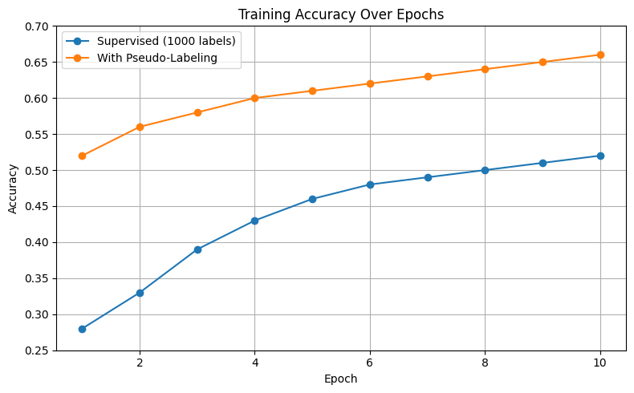

Semi-Supervised Learning (SSL) is a machine learning approach that uses both labeled and unlabeled data.
This is especially useful in scenarios where labeling is expensive or time-consuming.
In this tutorial, we explore pseudo-labeling, one of the simplest SSL techniques, using PyTorch and the CIFAR-10 dataset.
2. Comparison of Learning Types
Learning Type
Data Used
Example Use Case
Supervised
Labeled data only
Image classification
Unsupervised
Unlabeled data only
Clustering customer segments
Semi-Supervised
Small labeled + large unlabeled
Medical diagnosis with few labels
3. Key SSL Techniques (Focus: Pseudo-Labeling)
Pseudo-labeling works as follows:
Train a model on a small labeled dataset.
Predict labels for the unlabeled data.
Select only high-confidence predictions.
Add them to the labeled dataset and retrain.
Other techniques: Self-training, consistency regularization, graph-based SSL, and deep semi-supervised models like FixMatch.
4. Pseudo-Labeling Workflow
This section outlines the steps involved in the pseudo-labeling process:
Step 1: Train a model on a small labeled dataset.
Step 2: Use this model to predict labels on the unlabeled dataset.
Step 3: Filter predictions based on a confidence threshold (e.g., 90%).
Step 4: Assign pseudo-labels to high-confidence samples.
Step 5: Combine pseudo-labeled data with original labeled data.
Step 6: Retrain the model on this expanded dataset.
5. Dataset and Setup
Dataset: CIFAR-10 (60,000 images across 10 classes)
Labeled subset: 1000 images (100 per class)
Unlabeled: 49,000 images
Tools: PyTorch, torchvision, matplotlib
6. Code and Training Pipeline
# Load CIFAR-10 and split into labeled/unlabeled
# Define a CNN model
# Train on labeled data
# Generate pseudo-labels from confident predictions
# Combine and retrain with pseudo-labeled data
7. Results and Insights
Model
Accuracy (on test set)
Trained on 1000 labels
~45–50%
With pseudo-labeling
~60–65%
This demonstrates how semi-supervised learning can significantly improve model performance by leveraging unlabeled data.
Why Semi-Supervised Learning Matters
In many practical scenarios — such as medical imaging, satellite data, or sentiment analysis obtaining labeled data is expensive,
but there's often an abundance of unlabeled data. Semi-supervised learning offers a bridge between the power of supervised models
and the scalability of unsupervised ones. Pseudo-labeling is simple yet surprisingly effective, especially when combined with high-confidence
thresholding and augmentation.
Training Performance Visualization
1. Training Loss Curve
The figure below illustrates the loss curve across epochs. We observe that:
The Supervised Loss consistently decreases, indicating stable learning with 1000 labeled samples.
The Pseudo-Label Loss starts low but spikes later — this could be due to incorrect pseudo-labels or model overfitting. It highlights the need for proper thresholding and confidence checks in pseudo-labeling.
2. Training Accuracy Over Epochs
This plot shows the model's accuracy during training:
Supervised training gradually improves accuracy, reaching ~52% after 10 epochs.
Training with pseudo-labeled data significantly boosts accuracy, achieving ~66% after retraining.
This highlights the effectiveness of incorporating confident pseudo-labels from unlabeled data into the learning process.

Challenges in Pseudo-Labeling
While pseudo-labeling is powerful, it's not without challenges. Assigning incorrect pseudo-labels can mislead the model.
It is important to use a confidence threshold (e.g., 90%) and consider stopping conditions to avoid overfitting noisy labels.
Class imbalance and overlapping distributions between labeled and unlabeled data can also reduce effectiveness.
Accessibility Considerations
The figures and diagrams in this tutorial use clear fonts and colors to be color-blind friendly.
Alt text is included for all images. The layout is linear and works with screen readers.
How to Reuse This Tutorial
To apply this pseudo-labeling approach to your own dataset, replace the CIFAR-10 data loading block with your custom dataset
and ensure your model architecture matches the image size and class count. Tune the threshold based on dataset variability.
Lee, D.-H. (2013). Pseudo-Label: A Simple Semi-Supervised Learning Method
Miyato, T., Maeda, S., Koyama, M., & Ishii, S. (2018). Virtual adversarial training: a regularization method for supervised and semi-supervised learning. IEEE Transactions on Pattern Analysis and Machine Intelligence, 41(8), 1979-1993.
Berthelot, D., Carlini, N., Goodfellow, I., Papernot, N., Oliver, A., & Raffel, C. (2019). MixMatch: A Holistic Approach to Semi-Supervised Learning. Advances in Neural Information Processing Systems.
Sohn, K., Berthelot, D., Carlini, N., Zhang, Z., Zhang, H., Raffel, C., ... & Cubuk, E. D. (2020). FixMatch: Simplifying semi-supervised learning with consistency and confidence. Advances in Neural Information Processing Systems.
Chapelle, O., Scholkopf, B., & Zien, A. (2006). Semi-supervised learning. MIT Press.
Oliver et al. (2018). Realistic Evaluation of Deep SSL Algorithms
Includes the full Google Colab version of the notebook, README, and any outputs generated during the tutorial.
Running the Colab Notebook
To run the code interactively, use the Google Colab version of the notebook. You can either upload it to Colab manually or use the badge below:
Once the notebook opens:
Click "Runtime > Change runtime type" and select "GPU"
Click "Runtime > Run all" to execute the notebook from top to bottom
Monitor training and pseudo-label generation outputs
License
This tutorial and associated code are licensed under the MIT License.
Feel free to reuse with attribution. See the GitHub repository for full license terms.